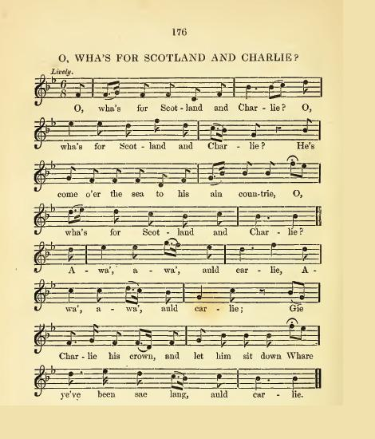

O Wha's for Scotland and Charlie?
Pour Charles et l'Ecosse
Anonymous
From Dr. C. Mackay's "Jacobite Songs and Ballads of Scotland."Tune - Mélodie
"O Wha's for Scotland and Charlie?"
from "The Garland of Scotia" edited by J. Turnbull and P. Buchan , Glasgow, 1841, p. 176
Sequenced by Christian Souchon

|
To the tune:
No information was found as to the origin of this fine tune. |
A propos de la mélodie:
Aucun renseignement concernant cette jolie mélodie n'a pu être trouvé. |

|
WHA'S FOR SCOTLAND AND CHARLIE?
1. O wha's for Scotland and Charlie ? O wha's for Scotland and Charlie ? He's come o'er the sea To his ain countrie ; Now wha's for Scotland and Charlie ? Awa', awa', auld carlie, Awa', awa', auld carlie, Gi'e Charlie his crown, And let him sit down, Whare ye've been sae lang, auld carlie. 2. It's up in the morning early, It's up in the morning early, The bonny white rose, The plaid and the hose, Are on for Scotland and Charlie. The swords are drawn now fairly, The swords are drawn now fairly, The swords they are drawn, And the pipes they ha'e blawn A pibroch for Scotland and Charlie. 3. The flags are fleein' fu' rarely, The flags are fleein' fu' rarely, And Charlie's awa' To see his ain ha', And to bang his faes right sairly. Then wha's for Scotland and Charlie ? O wha's for Scotland and Charlie? He's come o'er the sea To his ain countrie ; Then wha's for Scotland and Charlie ? Source: "Jacobite Songs and Ballads" edited by Gilbert Samuel McQuoid, London, 1888, page 354 |
POUR CHARLES ET L'ECOSSE
1. Soyons pour Charles et l'Ecosse! Soyons tous pour l'Ecosse et pour Charlie! L'océan franchi, Le revoici chez lui. Soyons tous pour l'Ecosse et Charlie! Va-t-en, malappris, et vite! Va-t-en, malappris, et vite! De lui rendre sa couronne Ainsi que son trône Il n'est que temps, vite, malappris! 2. Debout, debout, voici l'aurore! Oui c'est l'aurore, la nuit est finie! La rose au bonnet, Et revêtus du plaid, Levons-nous pour l'Ecosse et Charlie! Les épées quittent leur gaine, Les épées quittent leur gaine, Les canons résonnent, Et les sonneurs entonnent, Ecosse et Charles, leur symphonie. 3. Fièrement flottent nos bannières, Voyez comme elles flottent fièrement! Charles est allé Voir son beau palais, Puis ira combattre hardiment. Tous pour Charles et l'Ecosse! Tous pour Charles et l'Ecosse! L'océan franchi, Le revoici chez lui. Soyons tous pour l'Ecosse et Charlie! (Trad. Christian Souchon (c) 2010) |